SIDECAR：为 Semantic ID 生成式召回提供逐请求的精确性证书
Harshal A. Chaudhari 来自 Etsy。论文把 Semantic ID 生成器、物品编码和目录约束固定下来，只替换线上解码阶段。arXiv v1 提交于北京时间 2026 年 11 月 24 日 23:57，列于 11 月 25 日公告。本轮未核验独立公开代码。 论文原文
生成式推荐用短离散编码表示物品，再根据用户历史生成下一件物品的编码。为了在一次请求召回多个候选，大规模系统通常使用受目录约束的束搜索，每个编码位置都要依赖一次串行模型调用。生成分布变平时，搜索准确性会下降，服务却无法判断某个请求的输出与模型精确前 K 名差了多少。
1. 背景和问题
1.1 召回器已经给出了排序，服务还要把它找出来
生成式召回把每件物品映射成短的离散代码序列。假如目录内两个物品内容相近，量化器可能让它们共享前几个代码，再追加碰撞码形成唯一标识。模型在训练时读取按时间排列的用户物品编码，学习逐 token 预测后续代码。服务时，把所有有效编码组织成目录前缀树。当前缀是某个类目和子类的组合，下一步只在该前缀的合法子代码中归一化，后续走完才得到具体物品。这样能把下一步输出空间限制在码本，并阻止模型拼出目录不存在的物品。论文继续使用训练好的单头模型，研究在同一目录和同一条件概率下，如何取出概率最高的多个完整编码。
关键矛盾发生在前缀与叶子的排列之间。前缀概率代表整个子树拿到的份额，叶子概率代表其中单件物品拿到的份额。一条较重的分支可以把质量分给很多叶子，较轻的分支也可以把大部分质量分给一个物品。束搜索比较的是每层前缀质量，宽度不足时，多个重分支可以占满束内位置，轻分支随之消失。被裁掉的区域不再参与后续计算，束搜索照常生成完整的物品列表，甚至会给这些物品精确的模型分数。只检查返回物品分数是否可信，无法发现目录里还有更高分者。这是搜索准确性，与训练所得分数能否预测用户下一次点击是两个问题。
束宽一方面是运行前配置的，每层在固定数量的前缀上分配模型计算，另一方面真正需要保留多少前缀随请求变化。一个历史让某几个 SID 路径集中拿到质量时，较小的束就可能找齐前 K 名。不同历史或更平的条件分布会让多个团簇的前缀质量接近，谁的叶子进入前 K 名还要看团簇内部怎样分。这时同一束宽可能在一个请求恰好正确，在另一个请求漏掉高分叶。论文以模型全量穷举结果作参照，专门调查这种隐藏误差。线上只靠束宽、模型置信度或返回分数间隔都缺少对被裁区域的直接约束。
这条串行路径还会把编码设计和服务成本绑在一起。物品编码越深，束搜索越多一次依赖当前结果的模型调用。可用编码格子通常远大于目录，好些深层前缀事实上只有唯一后继。如果唯一子代码在约束分布下概率恒为一，继续送模型计算并不会改变物品分数；逐层束搜索仍要等待该位置完成。扩大码本并缩短编码能减少串行步数，却会改变每层的分组粒度。作者把这个选择留给编码器与模型设计，先问解码阶段能否识别单链，避免把确定的路径误计为每个请求都要走完的一轮。
1.2 草稿的价值来自能验证多少目录空间
约束束搜索默认只能通过当前模型调用发现值得继续保留的路径。现代推荐链路往往能直接拿到候选组，例如传统召回器返回的共现、分解或内容近邻，也可能从 KV 存储读到较早用户历史上的模型高分物品。论文把这些来源统一当作任意候选草稿，把它们的编码合并成共享前缀树，然后一次验证多条路径。草稿返回分数、概率尺度、训练目标都可以和目标解码器不同，真正用于排序的是当前历史和目标模型下重算的分数。用低成本草稿安排贵模型要算哪里，和把草稿分值混进推荐模型，是两种不同的关系。
比较相近的推测解码时还应先确定要复现谁。某些多 token 预测工作训练额外头来提高并行度，推测路线可能训练草稿器、学习自草拟结构或调接受阈值，随后以较少模型调用模仿束搜索的返回结果。SIDECAR 把基准推到穷举排序。即使某个草稿复现了默认束搜索，它仍可能沿袭束剪枝遗漏；SIDECAR 可从该草稿开始，只要有未探索前缀仍能藏住高分叶，就继续验证。这个接口使草稿可复用已有召回结果，但正式获证仍依赖明确的目录、模型和概率口径。若线上各路候选用不同物品版本或不同目录过滤，这些候选要先映射到本次有效 SID，才能作为可验证的起点。
草稿也不是越大越好。候选在同一簇共享路径时，新增物品可能随现有分支的合法条件一次得分，边际模型计算很小。候选跨入许多从未访问的簇时，需要更多树节点和可用位置。同样是五百件物品，一个草稿可能覆盖重质量簇并打分许多附带物品，另一个可能把名额投入大量弱相关的内容近邻。用用户下一个真实交互做草稿单点命中，能刻画业务候选质量的一部分，却不能直接解释这一次认证还要几轮。论文转而测当前模型未评分概率和最大未探索前缀，两者分别对应整体覆盖和最危险的未排除分支。
1.3 列表、证书与服务预算的作用域
是否拿到前 K 名，与能否证明已经拿到，需要分别记录。草稿的模型分数重算后，返回列表可能恰好与穷举相同，但剩余大分支仍可能容纳反例。实验有穷举标签可以识别这种情况，在线解码只能基于已知分支进行证明。给出当前证书的时点也不等于第一轮能预知结局。普通分支定界能在每轮产出有效的当下上界，但若只剩三轮、未来几轮需要进入多少深层节点要等实际展开才知道。预算版本希望再往前一步，用首轮后的目录结构和质量上界算出最迟可承诺的精度。
这里的精度是每个名次的模型概率比值。若承诺因子为一点二，则全量解码第十名的概率至多是当前第十名的一点二倍，第一个到第九个名次也各遵守同一个乘法界。名次上的物品可以不同，因子也不转换成标注命中率、相邻分数差、同一列表的交集比例或线上满意度。必须先说明是给哪个目录快照、历史和分布下的模型前 K 名做承诺，再谈怎样把当下的候选送进更下游的多路融合。此处的并行资源同样特定，每一轮计入多少树节点和是否满足依赖，会影响顺序成本。要把它换成服务预算，还需测注意力内核、历史缓存和草稿查找，论文后面的离线重放主要回答算法在这些可计数的资源下能保证什么。
2. 方法
2.1 目录约束与首轮验证
先固定当前历史和由所有合法 SID 组成的目录树。分数从每个前缀的合法孩子上计算，整件物品的概率是逐层条件概率相乘。
符号解释：$h$ 是当前交互历史，$c_{<\ell}$ 为第 $\ell$ 步之前的代码前缀，$c_\ell(e)$ 为物品 $e$ 对应的第 $\ell$ 个代码，$L$ 为统一的编码深度。指数项来自模型 logit $z_c$，分母只累加目录树中合法下一步。对于任意前缀 $b$，沿已确定代码相乘得到 $p(b\mid h)$；前缀下的叶集合互斥且穷尽合法延伸，因此这些叶的总概率等于 $p(b\mid h)$，单叶不可能超过它。这里的约束归一化必须和作为参照的解码器一致，若一个实现屏蔽后重新归一化、另一个则沿用全词表概率，就已经改变了排名目标。
把草稿物品的 SID 插入候选树，将内部节点接到历史后，节点仅注意历史、自己和自己的祖先，位置编号取各自的深度。沿同一条路径执行的独立前向与取树注意力对应节点，应得到同一个条件分布。深度为 $L-1$ 的节点一旦被前向，在其合法孩子上可以同时读出物品的精确分数，草稿没列出的末层兄弟也可顺带获分。每个已展开父节点同时给出未展开合法孩子的前缀概率。每个未评分物品都归属唯一一个这样的前沿前缀，前沿节点之间没有祖孙关系，所以下一步只需比较已知列表的最低入围分与前沿最大值。
符号解释：$r=0$ 为首轮结束，$F_r$ 是第 $r$ 轮后的前沿，空前沿时 $U_r=0$。$s_k(r)$ 是当前已评分列表第 $k$ 名，$p^*(k)$ 是穷举目标第 $k$ 名，$s_K(r)$ 是当前入围门槛。漏掉的更高分者必低于或等于 $U_r$，因此 $s_K(r)\ge U_r$ 给出精确证书，论文假定比较处没有并列。对每个 $k\le K$，$s_k(r)\ge s_K(r)$，故公用的停止因子是 $1+\max(\mathrm{gap}_r,0)$。这保证每个名次分数比值，允许同名次是不同物品。若首轮评不满 $K$ 个物品，实做应报告尚未形成有限因子并继续填列表。附录要求正的 $s_K(0)$ 才能从首轮许诺有限因子。
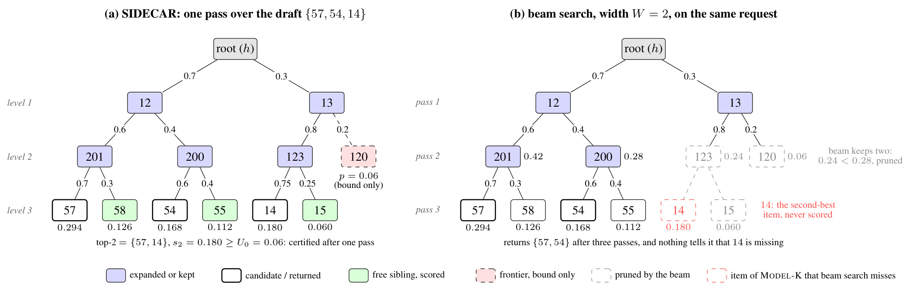
Figure 2 的左右面板都用深度三、返回两件物品的同一目录和同一历史。小树根部的两支先分得零点七和零点三，第二层的四个前缀再按各自的条件质量划分。左图把草稿中的 57、54、14 三件沿共享树送入模型，蓝色节点是已展开前缀，绿色叶子是顺带评分的兄弟物品。前缀 201 的总质量为零点四二，下面的 57 分得七成，得到零点二九四；前缀 200 总质量为零点二八，54 分得六成，为零点一六八。前缀 123 虽然比 200 轻，总质量仅零点二四，却把四分之三给了 14，绝对分数零点一八反超 54。候选树唯一未展开的 120 最多只有零点零六，左图用红虚线把它画成只知上界的前沿。第二区分了叶分数和前缀质量之后，就可用当前第二名零点一八封住这个前缀。这个证书没有去求 120 的叶到底长什么样，它从完整目录分布就知道该支最好的可能值。
右图每一层只能保留两项。第一层恰好能留下两支，但第二层以零点四二和零点二八锁定 201 与 200，零点二四的 123 被剔出。红色注记指明 14 从未得到评分，最后即使保留下来的叶概率全都计算正确，列表仍由 57 和 54 组成。三轮串行扫描与一次树验证表达的是不同信息：前者只维护留在束中的路径，后者同时维护未评分区域的边界。图中的对照也说明草稿的作用为何取决于前缀，验证一个共享父节点时，候选本身可能并非最终入选项，真正进榜的是在同一个节点输出中读出的合法兄弟。由此可以在回放中记录每一件入围物品是草稿显式命中还是同父免费评分，从而解释某两个同样长度的草稿为何用时不同。
2.2 分支定界与目录骨架
如果证书还有缺口，就只展开能超过当前门槛的前沿。首轮草稿的覆盖程度也可用未评分的总概率刻画。
符号解释：$O_r$ 是当前开放集合，$E_0$ 是首轮已精确评分的所有叶，含顺带评分的物品，$\varepsilon$ 为它们之外的概率质量。回退轮次复用历史和祖先的 K/V，展开开放前缀，读出新的叶分或更深的前沿，再更新入围门槛。精确叶越来越多，$s_K$ 单调不降；前沿被拆成概率不超过父节点的孩子，$U$ 单调不升。宽度充足且每轮展开所有开放前缀时，最浅开放前缀至少加深一级。于是含首轮最多 $L$ 次就能结束。隐藏总质量低于全量第 $K$ 名时必能首轮获证，因为其任一不相交的前沿分量都低于门槛。总量高一些仍可能获证，例如未评分质量分散在许多小前沿时，每个单独前沿都低于门槛。线上直接比较 $U$ 和 $s_K$，避免拿需要穷举才知道的 $p^*(K)$ 来写停止条件。
符号解释：$\mathcal S(b)$ 是 $b$ 下能继续分叉的前缀以及连通这些分叉所需的连接节点，$\sigma(b)$ 是一次并行解决该子树需要喂给模型的节点数。只有一个合法后继时，约束条件概率为一；若从某个节点往下只剩一个物品，可以用前缀分直接结算该物品。若中间有单子代码、后面还会分叉，连接节点要保留，使下游分叉节点的模型注意力仍然看到完整的祖先历史。只在整段路径不再分叉时整段省略前向，不要凭“只有一个孩子”任意从上下文中删 token。这条目录规则在首轮裁掉尾链，在回退中让出现的单物品前缀立即变成叶分，还支持一次送入一棵开放子树的完整骨架，节约层间依赖的轮次。骨架全送可能计算一些最终低于门槛的节点，因此会让每轮容量和总节点数上升。
2.3 预算规划与逐秩承诺
如果单轮最多 $M$ 个新节点、总调用最多 $Y$ 次，首轮按草稿顺序将候选树中能放进去的必要节点加入批次，仍然读出 $E_0$ 和 $F_0$。接下来选择候选的承诺因子 $\delta$，用 $t=(1+\delta)s_K(0)$ 固定一个保守阈值，对每个首轮前沿假设未知后代可在父质量内作最不利分配。在前缀 $f$ 的同一层，互斥节点的概率之和不超过 $p(f)$，所以能够超过 $t$ 的数量有上界。规划在逐层等待和立即计算整个骨架之间选择，允许先等若干层再把开放子树的剩余骨架成批送给模型。
符号解释：$c_j(f)$ 是 $f$ 下相对第 $j$ 层的骨架节点数，$\ell$ 是先一层一层展开的层数，$\mathcal L_\ell(f)$ 是末端那层的骨架节点，$\mathrm{top}_{k_f}$ 在这里选择骨架最大的至多 $k_f$ 个，而非真实概率最高的物品。公式第一项为逐层阶段可能开放的节点数，第二项是面对未知分布时整送骨架的最坏节点总数，写法等价于原文的骨架大小和。$\ell=0$ 可立即计算整棵骨架，成本确定；较深的计划把前向留给已知开放节点，但更多层间依赖需要按轮满足。
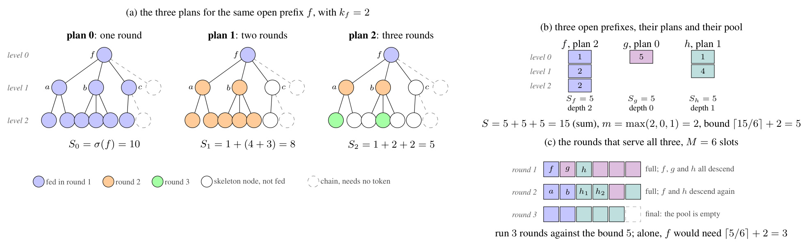
Figure 3 左图令同一前缀任一层最多有两个开放节点。计划零在第一轮送入十个骨架节点，知道具体分配之前先覆盖整棵可分叉部分。计划一先算根，再为第二层可能开放的最贵两个子树各自准备骨架，计数从十降到八。计划二只逐层发现高于阈值者，图中上界是根的一加两层各二，共五个节点。虚线圈出的链节点本身不会引入新的分支计算，白色圆点有资格进入骨架，但在这个最坏计数中不必与其他候选同时全部送入。所谓最坏情况取决于哪些后代既能分到阈值以上的质量又有大的剩余骨架。哪怕当前看到的候选草稿相同，余下目录的形状也会让适合的计划不同。
右上把三个开放前缀放在一个请求里，分别选择计划二、零和一，三者的池规模都等于五。总工作量按互斥子树相加为十五，等待下一层揭晓的深度取二、零和一的最大值二，因为三个子树可在同一批次并行推进。六个容量槽下，满轮数与因依赖不足而空置的轮数给出五轮上界。右下排程把已知开放节点排在前面，再用余下槽送有资格提前计算的骨架节点，实例实际只用三轮。图中第五轮是理论允许的上限，首轮发出承诺时并不知道之后真实节点会是哪几个。允许用容量共批消化不同子树，解释了为什么不能把每棵树的独立轮数直接相加。反过来，即使池的总节点数看似不多，若每批只送已知开放节点，深层可能连续几轮等不到被揭晓的机会，部署不能只按总工作量除以容量来承诺时间。
符号解释：$S$ 是剩余计划节点池的最坏大小，$M$ 是每调用槽数，$m$ 为计划的最大依赖深度，$R$ 为回退轮数上界，$y$ 为当前剩余轮数，$x_r$ 为要维持承诺这一轮至少应送入的池节点数量，若为负无额外配额。满轮至多用掉向上取整的池大小除以容量；如果可用池不够填满，则这一轮已把能喂的池节点推进，依赖深度下降。实际运行先送较重的已知开放前缀，需要时让池内待推测的骨架节点取代较轻、池外的开放前缀，使发出的承诺在下轮仍可保持。池以外的节点仍可能帮助缩小最终列表差距，只是当预算紧时没有进入这项最坏保证。
符号解释：外层 $m$ 枚举可等待的深度上限，对该固定上限，每个开放前缀可以独立选节点最省的合法计划。$S_m^*$ 是求和后最坏池大小，$R^*$ 为相应的最小轮数上界，$Y-1$ 已扣去第一调用，$\delta^*$ 是在这项规划上界下首轮可公布的最小因子余量。阈值升高会关闭更多前缀，并降低剩余前缀每层可能开放的数量，因此上界单调，可二分或按原文附录给出的断点求解。取 $\delta=0$ 的最小承诺调用数为 $Y_{\min}(M)=1+R^*(s_K(0))$。每轮观测后重规划，承诺不放宽；若部署容忍目标 $\delta_t$，可用当前证书满足目标时提前停，也可按 $\max(\delta^*,\delta_t)$ 理解停止方案的保证。
附录的存在性反例说明为何必须在少轮数时允许提前送骨架。它让草稿落入很轻的团簇，把真正前二名藏进较重、分支层数更深的另一个团簇。重簇骨架恰好是七个节点，允许一轮容纳全树。逐层策略尽管每次都优先重簇，仍要第四次调用才看到重簇叶子，如果只给两轮就一件 MODEL-K 都回不来。预算规划首轮后读到其骨架能整批容纳，第二轮直接求完并获得证书。这个构造支撑的是最坏情况存在性；实验中真实模型和目录究竟常不常出现这种反例，要用等预算重放判断。
3. 实验结果
3.1 离线重放与比较口径
Amazon Reviews 2014 的 Beauty 分类使用五核过滤和留一划分，有 22,363 名用户、12,101 件物品和 198,502 次交互。物品文本包括标题、品牌、分类和描述，由句子编码器表示后经 RQ-VAE 三层量化，每层 256 个代码，再补一个碰撞码，因此 $L=4$。四层仅解码器 Transformer 约百万参数，隐藏宽度 128，四个注意力头，用最多二十件物品的展开 SID 历史学习下一 token。论文给出的精确解码 Hit@10 为 0.055，属于用留出交互评价模型本身的指标。论文大部分图评价的是能否重现这个模型的前十名，排序候选与留出标签的实际命中只在理解模型基准时使用。
实验对每个测试用户先计算目录的 21,091 个内部节点条件分布，再让不同解码器在同一张概率表上做确定性重放。正文每图统计首批 10,000 名用户，每人一请求，默认草稿五百件及前十名。束搜索用同一个生成器和历史缓存。附录还把原模型树前向与普通序列前向对齐，报告最大 logit 差在 $10^{-5}$ 内，用真实模型运行算法一也在所有测试用户上复现了 MODEL-K 和重放轮数。论文报告全部实验中未观察到获证列表偏离穷举、实测差距超承诺、或运行轮数超证明上界。原文未给出完整的请求端到端生产延迟分布，因此节点、调用是本文的直接比较量。
实验通过前缀级的温度变换造出平坦模型。训练模型对应 $T=1$，其余 $T=3、5、10$，每个合法孩子的分布在本地重新归一化。这样会改变整条路径的概率乘积及叶子排序，和对最终物品概率做一次保持排序的单调温度缩放不同。尤其温度很高时，每步趋向在合法子节点上均分，叶子的形状取决于沿路分支数。作者把模型变平视为噪声条件下的一种代理实验，且每个温度的旧模型草稿都由对应温度重算。读图时应理解它们是四套可重算的排序任务，而非给同一目标排名只换一种解码超参。
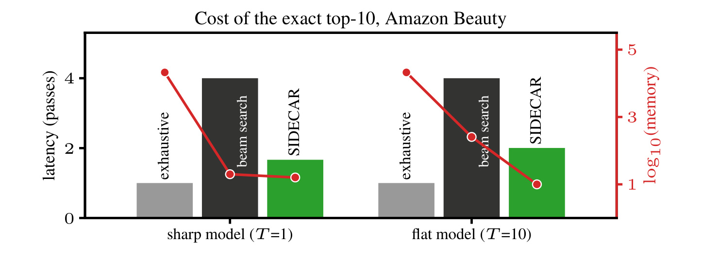
Figure 1 用两组柱概览锐模型和最平模型。灰柱是把可访问目录节点一起评分的穷举，黑柱是四轮束搜索，绿柱是 SIDECAR，柱高读左侧串行调用数，红点读右侧每轮内存资源的对数刻度。穷举可以一次出榜，却把整棵目录输入推到一个调用里，所以两组的红点都高。束搜索把计算切成四轮，右侧平坦模型比左侧需要更宽的束，图上黑柱高度却始终是四。SIDECAR 的调用低于束搜索，在锐模型上节点量级与束接近，在最平模型上红点与黑柱对应的红点分开得更明显。两条量纲不能直接相除成设备上的加速倍数，红轴已经取了对数，历史缓存、掩码以及一次调用实际送入的目录节点都会影响硬件成本。这个图把问题分成两轴，后面的等资源图才给出固定一轴时另一轴能省多少，并进一步区分列表正确与获得证明的预算。若只比较左轴会以为穷举恒优，若只比较右轴又会看漏前缀依赖造成的串行等待。
3.2 草稿质量与列表长度
草稿来源包括内容近邻、共现、矩阵分解和四种模型派生数组。一交互陈旧的用户数组是用少了最新交互的历史重新求模型高分物品，用户历史本身不会作为草稿输出。另三种是将模型权重离线取 FP4，或让历史分别再陈旧到两次、五次交互。模型派生数组和传统召回在实验中都看不到留出的真实下一件物品。内容近邻取最近五件历史物品的最大余弦相似度；共现按训练序列中相距最多五个位置的有向配对计数并衰减历史位置；矩阵分解使用隐式反馈加权 ALS。回放通常拿用户数组和矩阵分解作为两个代表，前者与目标模型更对齐，后者不依赖模型但能利用历史行为。
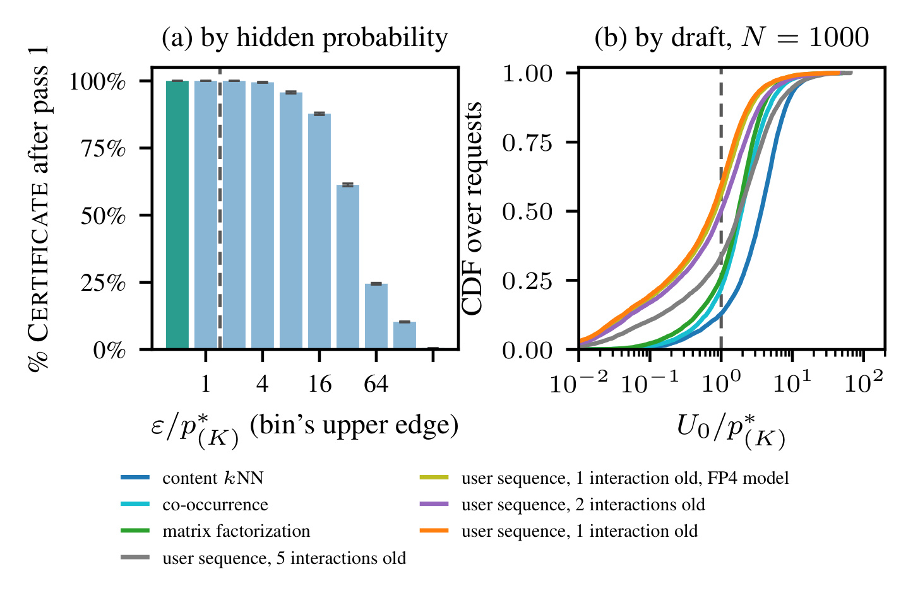
Figure 4 左图横轴是隐藏总概率与穷举第十名概率之比的分桶上限，纵轴是首轮证书覆盖的请求比例。竖线左侧条形全达百分之百，验证了论文的充分条件。比值超过一以后还有许多请求能获证，图注指出直到阈值约八倍仍有多数请求获证。原因是未评分概率可以分散到互不相交的前沿前缀，单个前缀仍不会跨过目前第十名。比值很大时下降迅速，读者不应把总量条件视为在线停止的等价判定。右图固定一千件草稿，横轴改为最大前沿概率相对穷举门槛的比值，纵轴是跨请求的累计概率。曲线在一的左侧越高，说明越多请求在首轮可排除所有危险分支。靠近左上的曲线来自较新的用户模型排名，内容近邻的曲线更偏右。两图合起来区分总覆盖和最坏单支，前者便于草稿离线筛选，后者解释给定请求为何不必等待下一轮。横轴里的穷举门槛只为分析作归一化，运行时用首轮已评分门槛作比较。
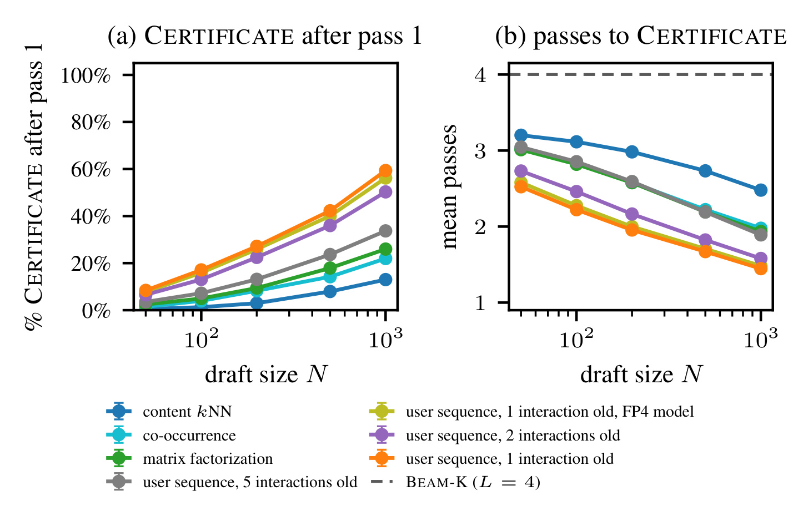
Figure 5 横轴都是草稿大小，左边报告首轮已经能够证明的请求比例，右边报告从首轮到获证的平均轮数，束搜索四轮画成水平虚线。草稿扩大后各曲线都改善，但在相近大小下差异明显。五百条一交互陈旧模型数组平均约一点七轮，首轮获证约四成，FP4 版本接近；矩阵分解和共现归为行为路线，在同量级约二点二轮，内容相似接近三轮。较旧用户数组在最佳与行为候选之间，五次更新滞后的数组可能与行为方案接近。这里每个来源最终都能在无宽度限制的回退中拿到精确列表，右图比较从起点达到相同数学目标的开销。同一草稿发生少量旧记录排序变化，也可能仍覆盖相同前缀并通过兄弟评分恢复结果，所以 FP4 草稿不需精确复现模型物品排序。附录量化的权重相对范数误差约百分之十一，FP4 与全精模型的前十列表只在百分之六十九的请求吻合，仍不妨碍把它用作目标模型的验证起点。反过来，草稿生成和 KV 查询完整成本未纳入这两条曲线。
草稿报表可以从离线存储分布计算一个代理覆盖，再联系在线被隐藏的质量。
符号解释：$u$ 是用户，$C$ 是这个来源给的草稿集合，$\widehat p_u(e)$ 是该用户的陈旧模型或批处理存储分布。求和只计草稿显式物品，与按当前历史在首轮打分后的叶集不同。这个量适合提前比较来源和大小，真正获证仍由当前模型的前沿上界决定。
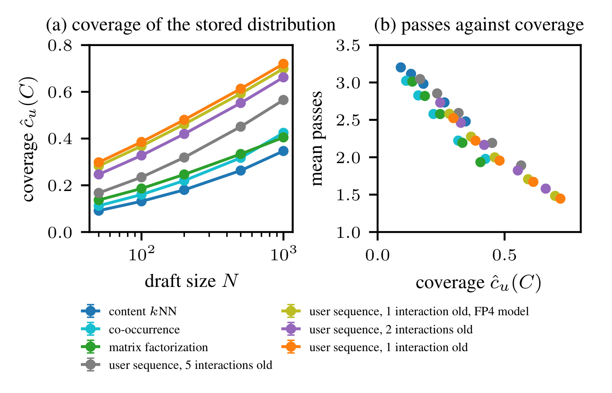
Figure 6 把来源和规模放进同一个代理横轴。左图横轴为草稿大小，纵轴为在存储模型概率下直接被草稿物品覆盖的质量，不同颜色仍对应前一图的来源。随着草稿增大，覆盖上升，最新用户模型排名在最高的位置，内容近邻最低。右图横轴换成该覆盖率，纵轴为实际平均获证轮数，每个点对应一个来源与一个规模设置。原先分成多条曲线的点大体落在同一条下降曲线上，说明对这批用户，能覆盖的模型质量比来源名称更能解释回退开销。工程上可在已有批处理概率可读取时估计同预算下哪种输入更接近目标生成器，同时要记下候选在实际首轮节点上会截到何处。图给出跨来源的经验关系，部署中更换候选来源、目录或历史更新节奏会改变其校准。两个相同覆盖的草稿仍可把剩余质量分布到大小不同的前沿，单次请求的轮数无法由这个离线均值决定。
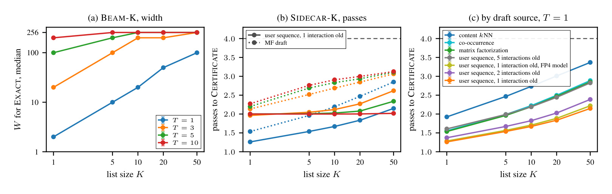
Figure 7 将返回长度由一件增到五十件。左图纵轴为中位请求得到全量相同列表需要的束宽，锐模型上大约由二增到一百，平坦模型在较小的列表长度即碰到实验扫的最大宽度二百五十六。中图的纵轴是 SIDECAR 到获证调用数，实线为用户数组，虚线为矩阵分解草稿。在训练模型上，用户数组由约一点二轮升至二点二轮，平坦模型尤其温度最高时约两轮；矩阵分解则逐渐逼近三轮。右图只看训练模型，各草稿来源随长度增长的相对顺序仍然大体保留，行为候选通常比一交互旧用户数组多半轮左右。返回更多物品意味着第 $K$ 名门槛下降，更多前沿都有机会越过它，分支定界难度上升。左图用追加并行宽度抵消同样的门槛变化，中右图把主要成本记录成增加的回退轮数。这是在单轮容量不受限的设置下比较的，观测到的低调用数不能直接外推到一轮只能送极少节点的场景。
3.3 目录消融与等预算对照
Beauty 的三层内容码理论上能寻址约一千六百七十万个格子。实际每层聚类后目录很稀，第二层约百分之七十八、第三层约百分之九十八的前缀只剩单一后继或物品，其骨架从 21,091 个被记作内部节点的条目缩到 2,533 个。附录细分一、二、三层原始内部节点为 256、9,043、11,792，计数按原文目录统计。平均每个一级簇的骨架约十个节点，给了整骨架验证可行的实验环境。目录侧这份统计不依赖请求历史，可以提前生成，但真正开放哪些簇仍落到每次请求的模型概率上。
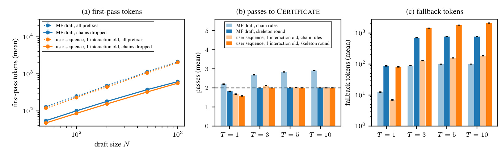
Figure 8 把目录结构的两种作用拆开。左图横轴是草稿大小，纵轴是首轮喂给模型的节点数，纵轴为对数。将所有前缀都送进去的曲线在上方，移除末端单链后，矩阵分解和用户排名的各条曲线在各个测量规模都降至约三分之一。此处省去的是条件概率已由目录确定的末端计算，因此在相同模型和目录下叶分保持不变。后两图并列给出按层回退和整骨架回退，面板的横轴换为模型温度。中图显示在本目录和容量假定下，整骨架能把认证控制在两轮以内。矩阵分解草稿从锐模型的二点二轮变为一点八轮，最平模型从二点九轮变到二轮；用户数组原先已经接近两轮，空间较少。右图把价格写回节点，正文概括矩阵分解达到这些回退收益约需多喂七倍节点，平模型上的用户数组也可能提前计算许多并不需要的骨架节点。
这两种优化改变的分母不同。单链规则避免提交分数已经确定的后缀，通常同时降低首轮节点数，适合默认在目录层使用。整骨架则把本来需要等待分支条件的工作并行做掉，吞吐代价要看每批节点和服务的设备可用并发。较强草稿主要把目标叶带进首轮，回退经常只做认证，整骨架不一定值得每次都触发。较弱草稿留下的重簇更深，给它整簇槽位可能确实省轮。每个策略对显存、总设备计算和请求等待的影响要按真实部署测量，原图给的是保持同一概率分数时的逻辑节点消融，整骨架工作量还应在较宽的批次点再比较。
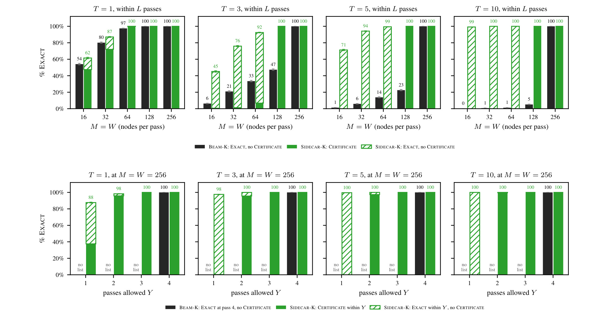
Figure 9 上排固定两类解码器最多四次调用，横轴扫每轮节点 $M$ 与同值束宽 $W$，四列分别是四个温度。下排反过来把每轮容量设为二百五十六，看允许一至四轮时做到何种程度。纵轴统一比较跨用户的全列表等值率。黑柱是束搜索被离线穷举验对的比例；深绿实心是 SIDECAR 自己能给出证书的比例，绿色斜线代表离线验对但当前未获证。图里的斜线要与实心加起来才是等值比例。锐模型固定四轮时两类方法大体一起上升并在相近容量收敛，但束搜索没有相应的实心段。温度较高时，束需要保留更多质量相近的一级簇才能找到对应轻簇里的高分叶。最平模型在十六节点处，束的全列表等值率接近零，旧用户数组作为草稿的 SIDECAR 已经接近百分之百，主要证据落在斜线区，完成证明依然需要更多容量。
固定每轮二百五十六节点时，束在四轮前没有完整列表。锐模型下 SIDECAR 一轮已在约百分之八十八的请求上拿到精确列表，绿色实心只有其中一部分；平坦模型一轮对应的等值率更高。约两轮时各温度上多数列表已有证书。这里的对照使用一交互旧用户模型数组。在相同 Beauty 目录上，替换为与模型独立的矩阵分解草稿后，附录 Figure 18 报告固定二百五十六节点要三次调用才全部获证，而温度一和三的小容量点的实际等值比例可以略低于束。对应的输入草稿是解释收益方向的干预条件，不能把正文图称为任意草稿在任意等预算场景都优于束。证书有效性仍由前沿概率与门槛决定。
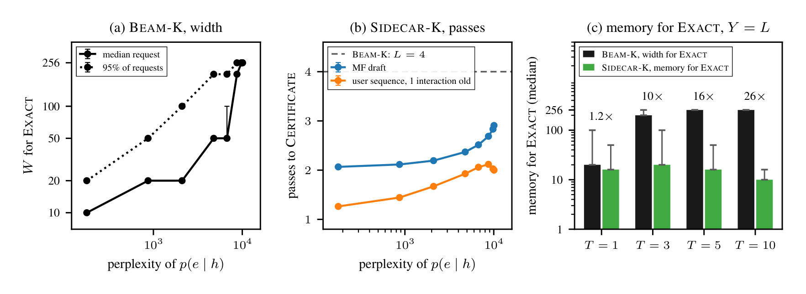
Figure 10 前两面板用物品分布困惑度作为横轴，体现模型有效分配概率的物品数。左侧黑实线是中位请求事后需要的精确束宽，黑虚线按覆盖九成五请求统计。随着温度和困惑度增高，中位宽度增长超过十倍，九成五分位较早碰到二百五十六的扫描上界。因为图中搜索宽度有限，到上界只能说明这批测量要求高宽度，无法用它估计更广的设备容量问题。中图显示用户数组平均认证轮数从一轮多逐渐接近两轮，矩阵分解则从两轮略多向三轮靠拢，束固定四轮的虚线表示其串行深度。右侧固定最多四轮，以离线能重现 MODEL-K 为目标，比较两类所需节点的中位数。四组温度下的黑绿数值之比分别为一点二、十、十六和二十六倍，图例明确右图的指标是 EXACT。因而这些倍率不能当作同条件下获得严格证明所省的内存，左两面板和右图也并非同一百分位的设备实验。
平坦化带来的现象可由局部归一化解释。对单个簇随机选择孩子时，长而稀的路径会把较大比例留给某一件物品。所以高温下前十名常在小于中位大小的簇，即使这些簇的总概率不在最重的几支。与当前温度一致的陈旧模型已经较强地反映目录形状，用户数组能把这些叶带入草稿，束宽却仍在为簇的概率质量付费。SIDECAR 接下来还要证明重簇确实不会藏有更优叶，这一步解释了为何高温下真实等值的节点需求下降，认证轮数却未共同下降。若业务要求返回的不是固定模型排序，而是要检验这些目录形状主导的物品是否改善消费，仍需留出交互和在线对照。
3.4 承诺代价与预算图
规划在首轮后给出保证；无计划运行只知道当前证书。作者进一步测量额外目录计划把未来预算分配给对真实模型未必有用的前缀时，列表里与穷举共用的物品会不会减少。这里的一般逐秩分数、列表完全相同、列表重合比例和证书覆盖率四个指标回答不同问题。即使全量前十里少一件，分数因子仍可能非常接近一；即使找齐十件，未探索前沿仍可能让最坏承诺保持较松。对照时应以每一图的图例和坐标为准。
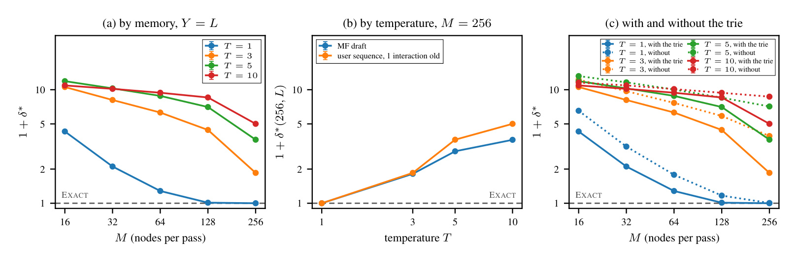
Figure 11 左图保持四次调用，横轴增加每轮的节点数，纵轴为首轮后公布的中位因子。锐模型曲线下降到一后，可预先约定预算用完之前能获证。温度越高，重前沿能容纳的最坏质量越大，曲线往往还显著高于一。中间固定二百五十六节点看温度，矩阵分解和用户数组从低温的近一升高，在高温下矩阵分解的宣布因子可以更低。原因是矩阵分解将草稿撒到更多簇，可能减少最坏的未覆盖质量；这和实际完整列表的等值率优劣并不冲突，旧用户数组更可能直接点中目录结构偏爱的真实高分叶。正文将用户数组在对应比较中的实现差距记为零，作者在此处区分回放中的真实榜单与首轮信息足以宣告的因子。这个证据不能延伸到所有更小草稿、不同来源或者所有预算组合。
右图实线使用骨架与深度计划，虚线用忽略目录具体结构的纯计数上界，横轴再次扫节点数。忽略目录时必须保守准备逐层展开，某些重簇里能有许多可能开放节点。知道有哪些单链和小骨架后，可以直接给出更低的可安排工作量。平坦模型在束搜索宽度附近，目录感知的中位因子约为计数版本的一半。纵轴单位是逐秩概率比，上界减半的含义是可承诺的最坏精确度改善，不能换算成重合增加多少或哪位物品必然保留。三面板共同说明，模型使草稿命中更容易和未评分区间可以排除，属于不同的判断。若接口只为某个可接受因子配置资源，应沿历史请求分布重画该因子的分位前沿。
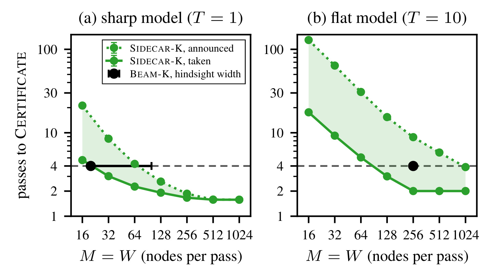
Figure 12 左右分别给出训练与最平模型，每个横轴位置是一种每轮可送节点数，纵轴读获得严格证书的轮数，两条都侧重中位请求。实绿线是实际执行到证书使用的轮数，虚绿线是第一轮根据最坏计划提前公布的轮数。束搜索黑点固定在四轮，横向位置取事后知道的精确宽度，无法对应为束搜索内置证书。锐模型中加少量节点使实际调用很快越过四轮线，继续提高容量后虚线也逼近实线。平坦模型的实线在容量足够时降到两轮，但虚线下降较慢；这反映未见条件可按目录允许的更糟分配来延长验证。图中的纵轴是对数，低容量时预告的轮次甚至可以远高于四，那些点来自固定窄宽度、允许更多次回退的预算平面。未受宽度限制的理论上限 $L$ 要求在同轮访问所有开放前缀，和这些分次装不下的设定不冲突。实际系统可分别以绿实线和绿虚线估算常态占用与最坏资源预留。
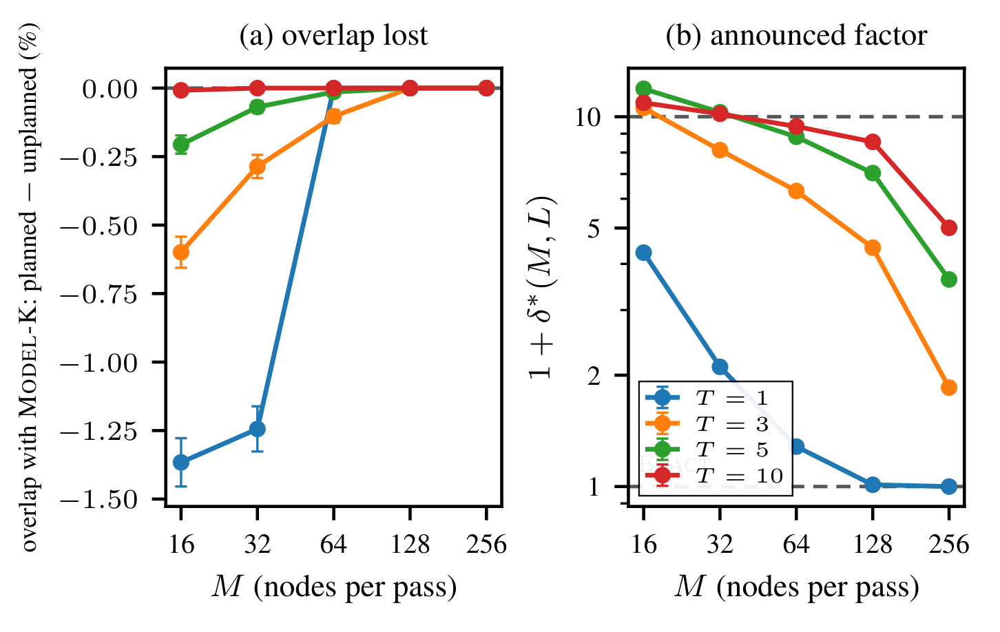
Figure 13 左面板取有计划与无计划运行的 MODEL-K 重合差值，两种方法都用同一旧用户数组且可使用相同资源。负数是规划使真实重合比例降低的百分点，横轴为每轮节点数，颜色按温度。锐模型下最低几个节点位置的差距约一至一点五个百分点，增加到中等容量后大多归零。高温线在本实验中相差更小。右面板给同预算的事前因子，最小容量处不少温度曲线的因子仍高，因而质量目标相对严格的部署可在首轮就发现预算吃紧，不必把低重合归因于草稿失效。这组观测只有用户数组和 Beauty 目录，无法给其他草稿源的典型重合代价设个位数百分点上限。若重簇确实藏有真正高分叶，提前送骨架反而可能在固定轮数内改善重合，附录构造了这样的例子。图中真正可复用的是比较形式：在同一输入和预算下，用实际重合量化保守规划用掉节点的机会成本。
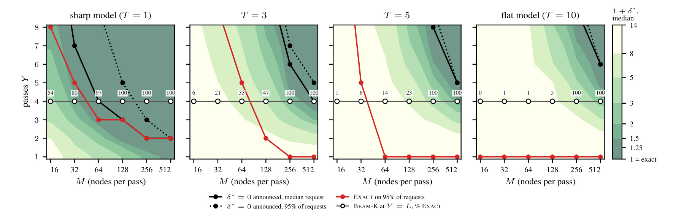
Figure 14 用四个平面同时画出每轮节点 $M$ 与总轮数 $Y$。底色是对应温度和预算下首轮宣布的中位逐秩因子，接近最深色时可宣布精确。黑实线是中位请求宣布精确的最低轮数边界，黑虚线换为九成五请求，红色画的是离线回看达到九成五全列表等值所需轮数。水平第四轮上标数的是束搜索在同等宽度的等值比例。训练模型在十六个槽位时束只有百分之五十四等值，二百五十六槽时达到百分之百，最高温度下相同两个点是零和百分之百。这不是一致的模型分数标尺，柱旁百分比是在各温度自己的 MODEL-K 上测的跨用户比例。预算图应沿固定颜色所代表的可接受因子找资源点，再看红线附近在这份回放里的实际可达精度。对只关心可解释承诺的服务来说，九成五黑虚线比中位颜色更接近尾部约束。
高温时红线降到一至两轮的区域，黑线却靠向大内存和大调用数的右上，使实际找齐与首轮可承诺的边界大幅分开。以真实等值为目标读红线，和以事前保证为目标读黑线，在这种模型上会直接得出不同资源配置。两线之间可选择按请求使用首次计算得到的因子，允许较大的因子时小预算即可返回；必须保证精确时，需要增加每轮节点、允许更多轮或先等一个实际证书。附录 Figure 19 把草稿缩至一到十件，同样 $K=10$，小容量平坦模型丢掉长草稿的大部分优势，但在每轮一百二十八左右时各种草稿几乎都能返回精确列表，束的等值率需要二百五十六宽度才齐。这里是短草稿的无计划运行等值曲线，在首轮评分连十件都没达到的请求上还无法宣布有限因子。读取预算颜色和实际效果前，需核实相应模式是否已有足够正分项。
4. 总结
4.1 可复用的判断
SIDECAR 值得复用之处是让召回器返回一项关于剩余搜索空间的可验证量。概率归一化、目录前缀与树位置都约定后，当前第十名和最大未搜索前沿就可以构成简单直观的证明接口。如果预算紧，调用方还能知道具体哪个请求的质量目标在剩余时间内可能无法承诺，服务策略可以据此继续、接受近似或转入较大预算，避免所有请求都用同一高宽度。普通分支定界的当前上界比较容易先做；首轮规划需要目录统计和节点依赖，只有系统确实要在首调用后调度剩余资源时，才体现其事前信息价值。这个次序有助于在已有生成式召回的在线服务中单独验证两个改动。
我的理解是，旧模型数组的优势来自当前历史与旧历史仍对同版目录和模型有较强的结构对齐。实验对平坦温度根据同温模型重算旧数组，若产品要在切换模型后继续读取旧版本的列表，应先测版本跨越如何改变概率覆盖，以及矩阵分解这类不依赖目标模型训练版本的草稿能否稳定补齐。候选质量监控也应独立记住首轮能装入多少草稿、同父免费评分多少、目录链压缩率和最终获证几轮。即使留出交互命中不变，也可能因为少数前缀更重而放大认证的尾部开销。目录的周期性更新会影响骨架复用和前沿上下界，因此缓存应携带读回核验所需的版本信息。
4.2 局限与复现优先级
- 基准只有 Beauty 的留一离线任务，百万参数、很浅目录和大量单链构成有利条件。更稠密目录、千级一级簇及更长编码会改变骨架成本、中间节点批大小和回退深度，文中的倍率无法直接代表这些规模。
- 分支温度分别重归一，只刻画一种可控的平坦化。真实模型可能在热门分支、跨语言分支、用户冷启与时间漂移上形状各异，并且真实偏差不一定像温度改变这样保留固定条件分布的相对次序。
- 真实模型核对与离线回放支持目录内分数及调用逻辑。树形掩码实现、批次互相阻塞、CPU 排程、KV 候选查询和通信未完整计入端到端请求指标，内存节点指标也未涵盖激活与张量形状造成的设备开销。
- 证明依赖固定合法目录、树注意力沿路径等价、分数无并列和可取得正的入围门槛。量化、数值舍入、并列分和按用户动态过滤都会影响证书的实现口径。若过滤发生在外部阶段，服务应明确证书覆盖的是哪一份目录与归一化分布。
- 证书保证重现模型排序。若训练模型因目录编码或分布问题已偏离用户偏好，消除解码误差只会更忠实地输出该排序，需用真实用户反馈评价把它送入最终推荐漏斗后的净影响。
复现先固定一个目录快照和生成器，在小库逐请求比对穷举、原束和 SIDECAR。明确记录第十名、最重前沿、并列、候选不足和目录更新的边界用例，核对树前向和逐路径输出容差。随后按候选来源、用户历史更新速度、目录稀疏度和模型排序尖锐度分组，记录首轮覆盖、当前认证、事前承诺命中率和真实列表差。这一步可定位不适合当作草稿的来源，以及概率因子因何过松。最后在生产硬件影子回放中同时测草稿读取、规划、每轮前向、队列和显存峰值，汇报候选一致性、吞吐和端到端延迟中位与尾部。若算力足以承担，再把业务 Recall 与下游消费指标做同窗对照，分别确认搜索等值是否带来可用的服务成本收益及产品变化。